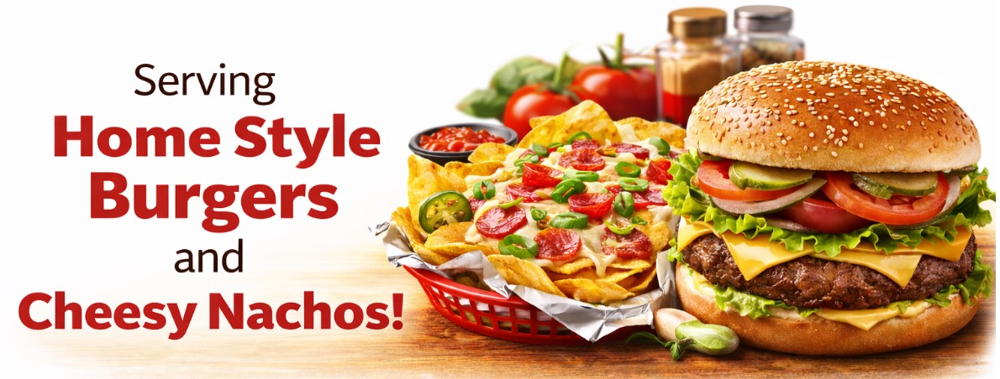

Little Chickies is proud to be a locally owned and operated restaurant serving Dominion and the local community. From day one, our goal has been simple: serve fresh, hot pizza and quality takeout food in a friendly, welcoming environment.
Being a small town restaurant means we are more than just a place to grab a meal. We are part of the community. We see the same families each week, we know our regular customers by name, and we take pride in being a dependable spot for lunch breaks, family dinners, and weekend takeout nights.
Our pizzas are made fresh with hand-prepared dough, carefully seasoned sauce, and generous toppings. Whether you prefer a classic pepperoni, a loaded works pizza, or something simple and cheesy, we focus on flavour, consistency, and quality every time.
In addition to pizza, we serve a variety of takeout favourites including donairs, burgers, garlic fingers, wings, and other comfort food classics. Every item on our menu is prepared with care because we believe good food should always be satisfying and made right.

“Great prices!”
“Best pizza in town great prices.”
“Mmmmmm can’t wait for my 12:30 am slice.” 🍕
“They make the best veggie pizza.”